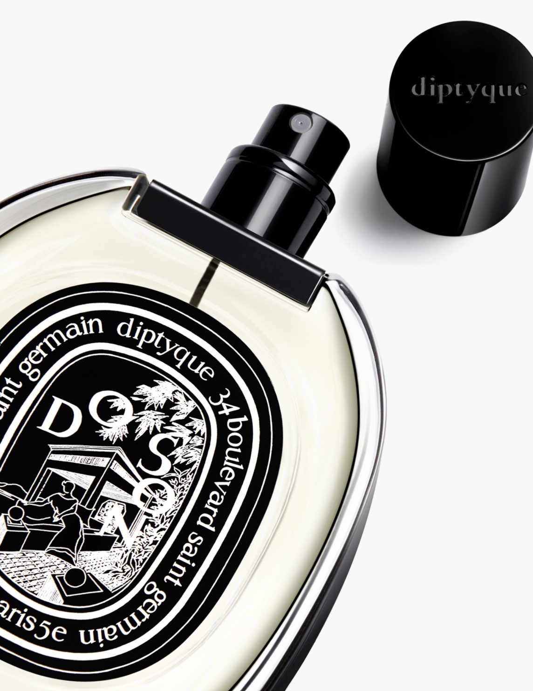

Hover this to see the video!
DO SON
Eau de parfum
In the Eau de Parfum, the tuberose is more enduring still. Its scent brings to mind the sundown hour, when the white flowers stand out in the darkness of the wooden pagoda...
As a child, Yves Coueslant, one of Diptyque’s founders, spent his summers in Do Son, in Ha Long Bay. The sea breeze carried the heady and spicy scent of tuberoses. Do Son has the delicateness and persistence of a memory from a childhood in Indochina - A voluptuous memory of flowers.
At the Haiphong market, tuberoses are wrapped together with jasmine and ylang-ylang in large canna leaves to be used as offerings.
Ingredients
alcohol denat. (sd alcohol 40-b) - parfum (fragrance) - aqua (water) – linalool – eugenol – hydroxycitronellal – isoeugenol - benzyl benzoate – citronellol - geraniol
